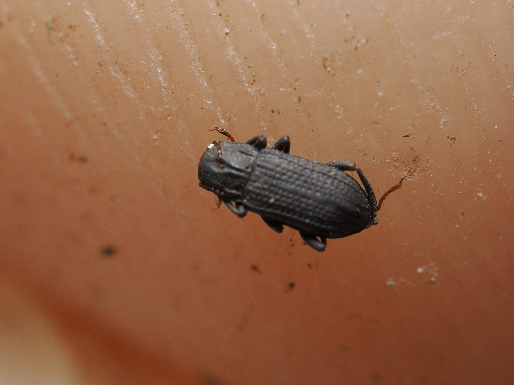
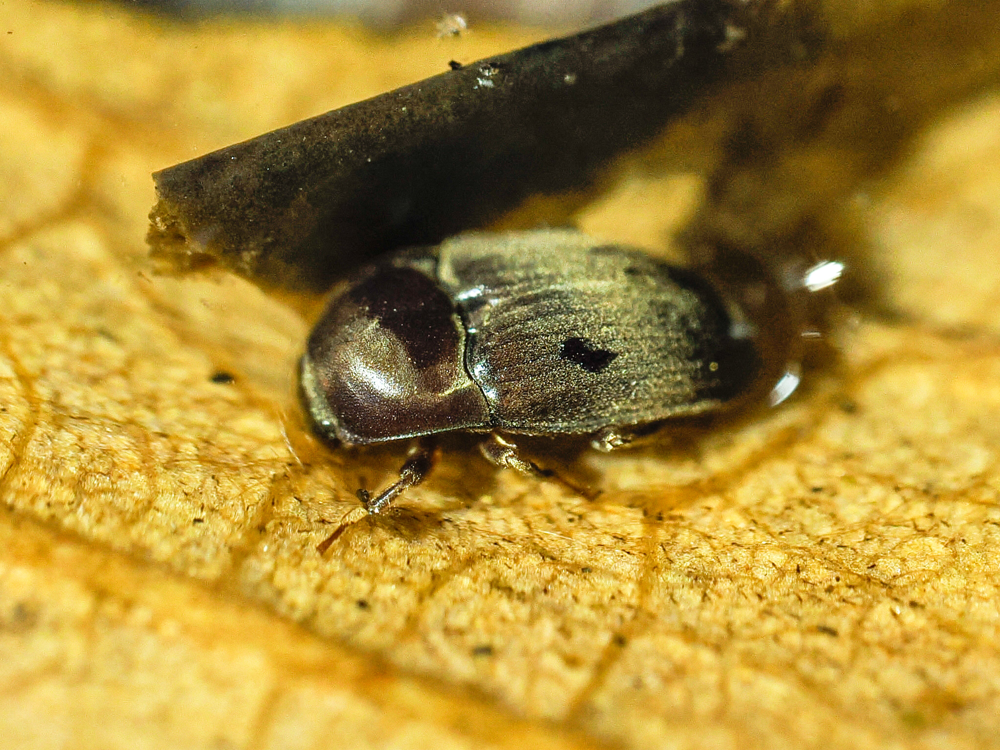
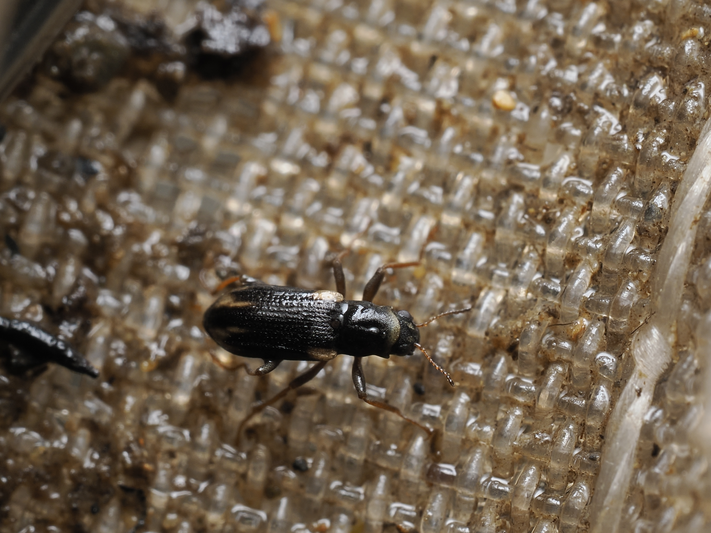
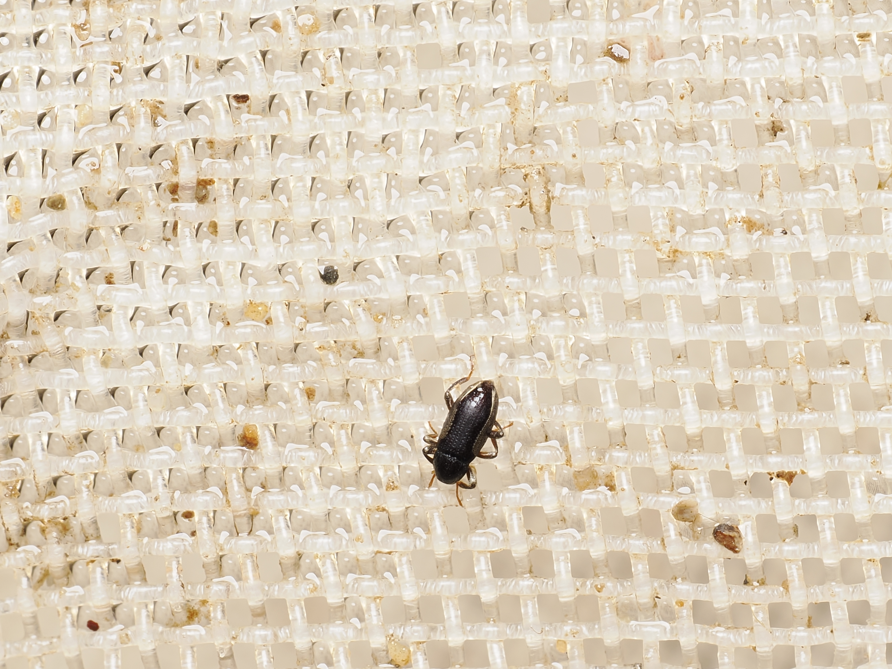
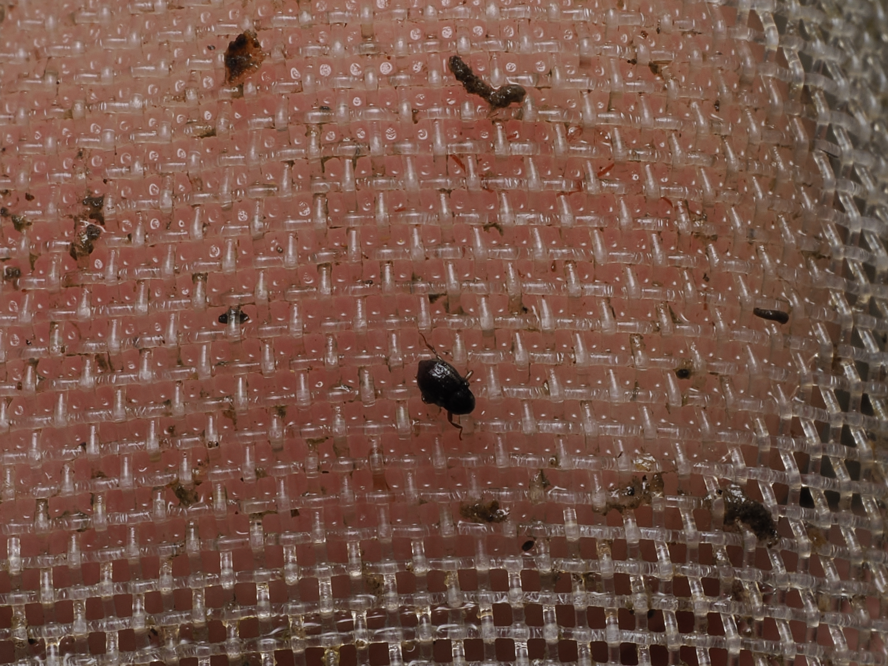
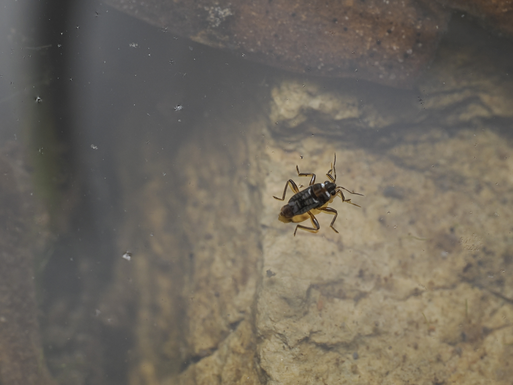
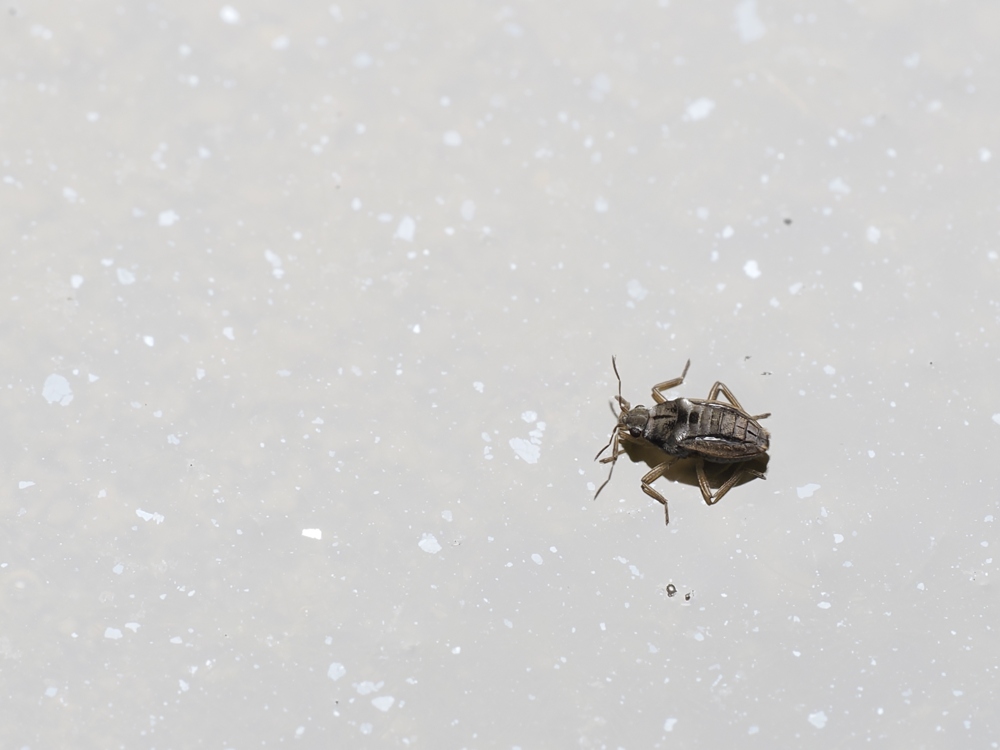
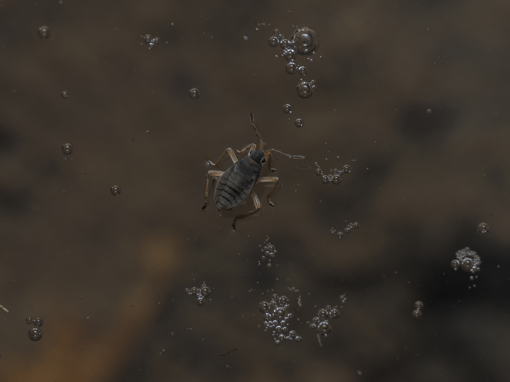

奄美で出会える水生昆虫
ゲンゴロウの仲間

体長11〜14mm。屋久島以南の南西諸島に分布し、国外では台湾、中国、東南アジアにも生息する南方系のゲンゴロウ。水生植物の豊富な池沼や水田などの止水域に生息する。生息環境の減少に加え、ゲンゴロウ類は近年飼育目的とみられる販売が多く確認されていたことから、2023年1月に他のゲンゴロウ類とあわせて特定第二種国内希少野生動植物種に指定された。この区分は販売・頒布目的の捕獲・譲渡のみを規制するもので、観察目的の採集そのものは規制対象外。同属のスジゲンゴロウ(本州以西に分布)によく似るが、分布域が異なるため見分けやすい。
販売・頒布目的の捕獲等禁止(特定第二種国内希少野生動植物種)
体長18〜25mm。日本国内では南西諸島(中之島以南)・大東諸島に分布し、国外では中国、台湾、東南アジア、南アジアにも生息する。クロゲンゴロウによく似るが、体形はやや細い卵型で、背面は光沢のある緑色から黒褐色。南西諸島に分布する近縁種(フチトリゲンゴロウ・ヒメフチトリゲンゴロウなど)の中では、比較的個体数が安定しているとされる。水生植物の豊富な浅いため池や放棄水田などに生息する。

体長10〜11mm程度の小型のゲンゴロウ。前翅は全体的に黄褐色で、目立つ縞模様は無い。本州(関東地方以西)・四国・九州・対馬・南西諸島・大東諸島に分布し、国外では中国、台湾、東南アジアにも生息する。水田や池沼などの開けた止水域に生息する。南西諸島のゲンゴロウの中では、トビイロゲンゴロウ・コガタノゲンゴロウとともに比較的健在な種とされる。
ヒメドロムシの仲間

奄美群島・沖縄諸島とグアムに分布する小型の水生甲虫。ヒメドロムシ科は主に清流に生息し、幼虫・成虫ともに水中で暮らす体長5mm前後までの甲虫のグループで、水のきれいな川の指標としても注目される。本種自体の詳しい生態についてはまだ分かっていないことが多い。

奄美大島だけに分布する固有種で、2005年に記載された。同じハバビロドロムシ属には、本州・四国・九州のハバビロドロムシとヒメハバビロドロムシ、大隅諸島のヤクハバビロドロムシがいる。ヒメドロムシ科は主に清流に生息する小型の水生甲虫のグループだが、本種自体の詳しい生態についてはまだ分かっていないことが多い。

奄美群島・沖縄諸島・八重山諸島とグアムに分布する小型の水生甲虫。沖縄島の個体群は別亜種オキナワミゾドロムシとして区別されている。ヒメドロムシ科は主に清流に生息するグループだが、本種自体の詳しい生態についてはまだ分かっていないことが多い。

奄美大島だけに分布する固有種で、2017年に記載されたばかりの新しい種。近縁種を持たず、古い時代から独自に分化してきた「遺存固有種」と考えられている。ヒメドロムシ科は主に清流に生息する小型の水生甲虫のグループだが、本種自体の詳しい生態についてはまだ分かっていないことが多い。

奄美群島と沖縄諸島に分布する小型の水生甲虫。ツヤドロムシ属は日本に8種が知られ、種によって本州から八重山諸島まで分布域が異なる。ヒメドロムシ科は主に清流に生息するグループだが、本種自体の詳しい生態についてはまだ分かっていないことが多い。

奄美群島・沖縄諸島に分布する小型の水生甲虫で、ノムラヒメドロムシ属では日本から唯一知られる種。日本のヒメドロムシ科研究の先駆者である野村鎮博士にちなんで名付けられた。本種自体の詳しい生態についてはまだ分かっていないことが多い。

奄美大島・沖永良部島に記録がある小型の水生甲虫。ドロムシ科はヒメドロムシ科と近縁なグループで、同じく清流に生息する。分類の扱いがまだ定まっていないこともあり、詳しい生態情報も少ない。

奄美群島・沖縄諸島(沖縄島では記録なし)に分布する小型の水生甲虫で、2007年に記載された。カラヒメドロムシ属は日本に2種のみが知られ、もう1種のキュウシュウカラヒメドロムシは九州に分布する。本種自体の詳しい生態についてはまだ分かっていないことが多い。

大隅諸島・トカラ列島・奄美群島・沖縄諸島に分布する小型の水生甲虫で、ウエノツヤドロムシ属では日本から唯一知られる種。トカラ列島口之島の個体群は別亜種トカラツヤドロムシとして区別されている。本種自体の詳しい生態についてはまだ分かっていないことが多い。
アメンボの仲間

体長1.5〜2.1mmほどの小型の水生昆虫。本州(福島県以西)・四国・九州、南西諸島では喜界島から沖縄島にかけて分布する。細流脇の薄暗い水たまりや石の陰などでよく見られ、水面に落ちた小さな昆虫を捕食する。

体長1.7〜1.9mmほどの小型の水生昆虫。南西諸島(奄美群島〜八重山諸島)と台湾に分布する。山間の林道脇の染み出しでできた水たまりなどで見られ、オスがメスを長時間ガードする配偶行動が学術研究で報告されている。

体長1.5〜2mmほどで、カタビロアメンボの仲間の中でも最小クラスの水生昆虫。本州・四国・九州・対馬・南西諸島・大東諸島(南大東島)に分布し、国外でも朝鮮半島から中国・東南アジア・台湾・オセアニアまで広く見られる。小さな水田や細流など流れのある水辺を好み、水面に落ちた小さな昆虫を捕食する。カタビロアメンボ科には飛べない無翅型と飛べる長翅型がいる。

南西諸島(宝島〜沖縄島)に分布する。ナガレカタビロアメンボ属は日本に数種が知られ、河川や池の岸辺に生息するグループ。本種自体の詳しい生態についてはまだ十分な情報が確認できていない。